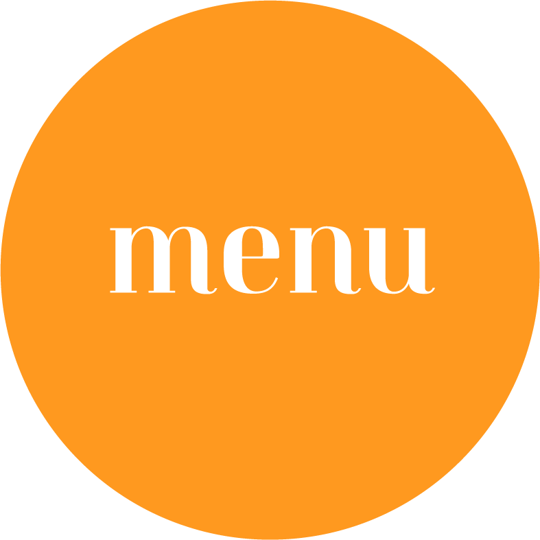
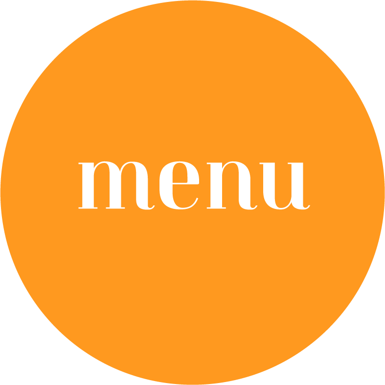

Case Study | Brand Identity
TLDR; Emily didn't have a brand. After researching lots of things we created a feminine, calming, and trustworthy brand. Script font and curves add to the soft, feminine vibe. Teal is a wonderful color for trust, honesty, and friendliness.
Emily; An HR Superhero who absolutely loves the human resources side of business but hates the term, "human resources." The term is so frightening and sterile. She wants to be viewed
as a partner to your business, not just someone who is going to holler at you or make everyone feel like they need to walk on eggshells.
She was starting her business and didn't have a brand, but knew she needed an identity that said, "I'm a calming, strong presence, and I'll take care of the fun stuff for you. You just focus on your business."
So, how do we make HR fun, friendly, collaborative, and calming?

I got to know Emily and her business by reviewing her answers to my brand direction form.
This form answers everything about her business; Mission, goals, competitors, design likes and dislikes, preferences, and her target audience.
From here, I take notes and get started on the visual aspect of her brand: the mood board and logos.
I put together a mood board which is visual inspiration for the direction of her brand identity.
Logo concepts are designed based on the feedback I receive on the mood board from Emily.
Her mood board focuses on what I feel would speak to her audience best.
After talking with Emily, I know exactly what she does. Now, I need to see what her competitors offer, what their brands look like, and what trends or cliches I see in the industry as a whole.
After I figure out what sets Emily apart from her competition, I need to begin to think like her target audience. What would make me say, "This is my person!" looking at Emily's brand?
Let's gather the visual inspiration for this brand. Colors, typography, styles, shapes, images, etc. Then, let's start building the visuals that will connect her audience to her.

This is where I meet with Emily and explain my choices. I remind her that this is just inspiration for the visual direction of her brand.
I explain that I immediately thought of the color teal because it reflects a calm, trustworthy feel. She mentioned that she loves script fonts, which
is great because script fonts themselves can either be down-to-earth and friendly, or really luxurious and fancy. I found some examples of script fonts that are fun, quirky, and clean. Something that says, "Yes, I'm in HR, but I'm fun."
Then, I pulled some images of icons I liked that I think we could incorporate into the design of her logo, since this was important to her.
This is where we decide if we are going down the right path, or if I've completely missed the mark (this hasn't happened to me yet!)
This is why the strategy phase of my process is so important and why we meet to go over all the details.

Initial logo concepts consisted of three different types of logos. We had two wordmarks, and an icon. Emily had said she really wanted to use a script font in her logo if there would be any type. For the first logo: thick, curvy letters with a "link" symbol on the left of her last name. Second logo: Emily's preference of a script font, simply with her first name. Third logo: An icon playing on a letter, "h" for Hodgin, and inside the letter h, a "c" for consulting. Initial feedback was that the icon logo was out. She absolutely loved the wordmarks, though, and the flexibility on logo types these would provide. After some thought behind the logo, she decided to go with "Hodgin" in the logo, and use the "link" symbol, but incorporate the font used in the second logo.

The logo was revised to fit Emily's brand. A feminine, playful, calm, and meaningful logo with several logo marks to match. The three circles represent partnership and a link of Emily to her clients, helping them with their human resources needs. The link symbol can be used along with the main logo or alone. A simple sans serif font compliments the symbol on the logo mark, and provides the full business name on the full Hodgin logo. It pairs nicely with the flowy script font! Teal - a color of honesty, trust, and calmness. Perfect for Emily's professional, friendly, and confident demeanor.